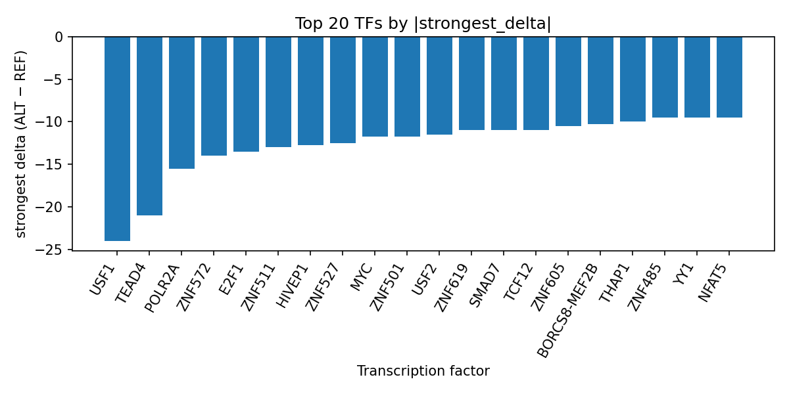

Author: snv-tf-researcher
This manuscript reports a computational interpretation of the GWAS candidate variant rs575215858 (chr7:115504925 G>A) for bilirubin metabolism disease. The variant was selected by effect size (abs_beta 3.795; p = 8 × 10^-12) and annotated as a downstream_gene_variant. AlphaGenome TF ChIP-seq outputs suggest that the ALT allele is predicted to broadly reduce binding across multiple transcription factors, with the strongest effects observed for USF1, TEAD4, POLR2A, and several zinc-finger proteins. These predictions prioritize a potential regulatory mechanism for follow-up, but they are computational estimates rather than experimental measurements and require validation.
Bilirubin metabolism is clinically relevant across diverse liver and systemic disorders, and bilirubin has been evaluated as a biomarker or associated trait in multiple disease contexts in the provided literature, including liver dysfunction, cholestatic disease, cardiometabolic outcomes, and genetic bilirubin phenotypes [1-5]. Studies in Gilbert syndrome and related analyses have linked altered bilirubin biology with inherited variation and phenotype differences, supporting the broader relevance of bilirubin-associated traits in human disease [6,7]. In parallel, Mendelian randomization and other genetic analyses have associated bilirubin with diverse outcomes, including migraine, allergic disease traits, and other health-related endpoints [8-10].
Within this context, the present analysis uses a GWAS-selected SNV, rs575215858, to prioritize candidate transcriptional mechanisms via AlphaGenome TF ChIP-seq prediction. AlphaGenome provides computational predictions rather than direct molecular measurements, so the results should be interpreted as hypothesis-generating and not definitive evidence of TF binding changes. Experimental validation remains necessary.
The candidate variant rs575215858 (chr7:115504925, G>A) was provided as a GWAS association for bilirubin metabolism disease, with selection based on effect size. The consequence annotation supplied for the variant was downstream_gene_variant.
The analysis framework, as summarized in the run pipeline, comprises disease and association retrieval, effect-size ranking and SNV filtering, Ensembl VEP consequence annotation and REF allele checking, AlphaGenome TF ChIP-seq prediction, TF-level summarization, PubMed literature search, and manuscript synthesis (Figure 1).
Figure 1. End-to-end workflow used to prioritize the candidate SNV and interpret AlphaGenome TF ChIP-seq predictions. The pipeline integrates GWAS-derived variant selection, annotation, computational TF binding prediction, TF-level summarization, literature retrieval, and manuscript generation.
AlphaGenome TF ChIP-seq predictions were used to compare the ALT allele against the REF allele across available TF tracks. Because these outputs are computational predictions, they should be interpreted as prioritization signals rather than direct biochemical measurements.
The candidate variant rs575215858 showed a strong GWAS association with bilirubin metabolism disease (p = 8 × 10^-12; abs_beta = 3.795) and was annotated as a downstream_gene_variant. No nearest gene was provided in the input.
Across AlphaGenome TF ChIP-seq tracks, the ALT allele was predicted to predominantly inhibit TF binding. The strongest predicted negative effect was observed for USF1 (strongest delta -24.0; 8 inhibited tracks), followed by TEAD4 (-21.0; 8 inhibited tracks) and POLR2A (-15.5; 44 tracks total). Additional TFs with notable predicted inhibition included ZNF572, E2F1, ZNF511, HIVEP1, ZNF527, MYC, USF2, SMAD7, TCF12, ZNF619, ZNF605, BORCS8-MEF2B, THAP1, SP1, RAD21, FOXC1, ZNF485, NFAT5, ZNF12, YY1, ZFX, ZNF318, ZNF574, POU2F2, MAX, and ATF3. This pattern suggests a broad reduction in predicted TF occupancy at the locus, with particularly strong effects for USF1 and TEAD4.

Figure 2. Top transcription factors ranked by the absolute predicted ALT-vs-REF binding delta at rs575215858. Bars show the strongest signed delta per TF across AlphaGenome ChIP-seq tracks, with negative values indicating predicted inhibition by the ALT allele.
The run-level summary in top_tf_effects.tsv indicates that the top prioritized TFs were largely inhibited by the ALT allele, with USF1 and TEAD4 showing the strongest overall predicted effects and POLR2A showing the broadest track coverage among the listed TFs. The consistency of inhibition across multiple TFs is compatible with a locus-level regulatory perturbation hypothesis.
The computational predictions prioritize rs575215858 as a potentially regulatory variant at a locus relevant to bilirubin metabolism disease. The dominant predicted direction was decreased TF binding, including for TFs with multiple tracks such as USF1, TEAD4, POLR2A, MYC, USF2, RAD21, YY1, SP1, MAX, and TCF12. Because AlphaGenome outputs are predictions rather than direct assays, these results do not establish a functional mechanism, but they do provide a focused set of TFs for experimental testing.
The literature provided with this run places bilirubin in a broad disease context. In human genetic and clinical studies, bilirubin-related phenotypes have been discussed in relation to Gilbert syndrome and its biochemical profile [6,7], migraine risk in Mendelian randomization analyses [8], allergic disease associations [9], and several liver-related or systemic disease settings [1-5,10]. Taken together, these reports are consistent with bilirubin being a relevant biomarker and trait in diverse human phenotypes, although they do not directly validate the specific regulatory effects of rs575215858.
This interpretation is also consistent with the broader use of genetically predicted biomarkers and liver-related traits in disease modeling. However, the present analysis is limited to the provided SNV, AlphaGenome outputs, and literature list. Experimental validation is required to determine whether the predicted TF changes alter gene regulation, chromatin occupancy, or bilirubin-related biology.
This analysis has several important limitations. First, rs575215858 was selected by effect size, so it may be in linkage disequilibrium with the true causal variant rather than being causal itself. Second, AlphaGenome TF ChIP-seq outputs are computational predictions and not experimental binding measurements. Third, the provided annotation does not include a nearest gene, limiting locus interpretation. Fourth, the literature list available for this run is restricted and does not permit broader contextual citation beyond the supplied records. Finally, functional validation is required to determine whether the predicted TF perturbations are biologically meaningful.
Dardanelli C, Cotta E, Pinto CG, Falcioni G, Toselli L, Maricic M, et al. Conservative management of choledocholithiasis in the pediatric age: A safe therapeutic approach. Cirugia pediatrica : organo oficial de la Sociedad Espanola de Cirugia Pediatrica. 2026;39(2):60-64. PMID: 42028711. doi:10.54847/cp.2026.02.12
Wang J, Pan S, Xiong C, Tian J, Wang Y, Yu Y, et al. Elevated IL-17A level is associated with poor overall survival following immune checkpoint inhibitors combined with targeted therapy in hepatocellular carcinoma with hyperbilirubinemia. Front Immunol. 2026;17:1791538. PMID: 42023242. doi:10.3389/fimmu.2026.1791538
Borba-Junior IT, Basso RM, Gorenstein TG, Limonta N, Santos BD, Ramos MM, et al. Assessment of Renal Function and Bilirubin Measurement in Urine as Prognostic Value in Immune-Mediated Hemolytic Anemia in Dogs. Anais da Academia Brasileira de Ciencias. 2026;98(1):e20241141. PMID: 42018897. doi:10.1590/0001-3765202620241141
Fischer SE, Postma RJ, Bijkerk R, Kerbert AJC, van Zonneveld AJ, Coenraad MJ. Albumin Restores Endothelial Cell Mitochondrial Morphology in Patients With Decompensated Cirrhosis. Liver Int. 2026;46(5):e70653. PMID: 42010744. doi:10.1111/liv.70653
Kohrer S, Brand ML, Leidner V, Zimmer H, Langel A, Langel J, et al. Exploratory longitudinal cohort study of modest bilirubin-driven biochemical liver alterations after SARS-CoV-2 infection in a selected subgroup of patients with Wilson's disease and liver cirrhosis. BMC Gastroenterol. 2026;26(1):. PMID: 42010493. doi:10.1186/s12876-026-04840-3
Churchill N, Barry L, Nianogo R. Effects of Gilbert syndrome on cardiovascular disease risk reduction: a systematic review. Egyptian Heart J. 2026;78(1):. PMID: 42008064. doi:10.1186/s43044-026-00738-3
Ghimire PG, Ghimire P, Pande R. Genetic, clinical, and biochemical profiling of Gilbert syndrome in a Nepali cohort: High prevalence of the UGT1A1 c.-3279T>G polymorphism and correlation with hematological parameters. PLoS One. 2026;21(4):e0347128. PMID: 41973709. doi:10.1371/journal.pone.0347128
Yi S, He H, Hang L. Bidirectional causality between liver dysfunction and migraine: A mediating Mendelian randomization study. Medicine. 2025;104(41):e44860. PMID: 41088633. doi:10.1097/MD.0000000000044860
Zhang X, Cheng P, Li X, Fu Z, Zhang Y, Shi W. Associations of circulating metabolites with childhood allergy and common allergic diseases: a Mendelian randomization study. J Asthma. 2026;63(4):466-476. PMID: 41396267. doi:10.1080/02770903.2025.2603330
Abdu FA, Hu H, Lu P. Circulating metabolic and inflammatory biomarkers in MINOCA: pathophysiologic mechanisms and clinical implications. Clin Chim Acta. 2026;589:121009. PMID: 42001925. doi:10.1016/j.cca.2026.121009